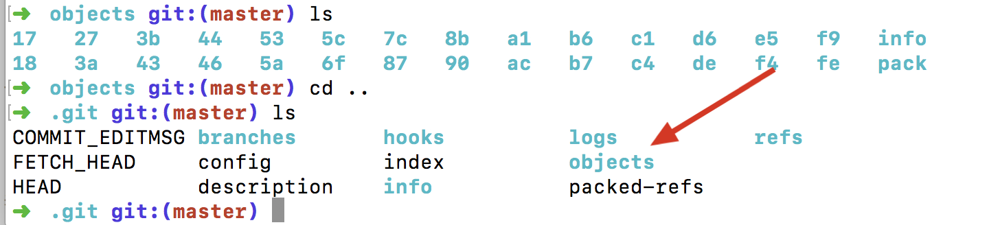

Git 拾遗
-
.git文件目录 - commit,tree,block关系
- 分离头指针情况的注意事项（没有与branch进行关联）
- 修改commit的message
- rebase操作
- diff操作
- 恢复工作区，恢复索引区
- 删除，重命名文件
- ignore文件
.git文件目录
➜ .git git:(V.12.0) ls -l
total 1440
-rw-r--r-- 1 raojunbo staff 26 12 15 15:40 COMMIT_EDITMSG
-rw-r--r-- 1 raojunbo staff 1573 12 18 19:12 FETCH_HEAD
-rw-r--r-- 1 raojunbo staff 23 12 18 19:12 HEAD
-rw-r--r-- 1 raojunbo staff 41 12 18 19:12 ORIG_HEAD
-rw-r--r-- 1 raojunbo staff 551 12 12 12:56 config
-rw-r--r-- 1 raojunbo staff 73 11 30 11:39 description
-rw-r--r-- 1 raojunbo staff 311844 12 20 22:54 gitk.cache
drwxr-xr-x 13 raojunbo staff 416 11 30 11:39 hooks
-rw-r--r-- 1 raojunbo staff 391258 12 20 22:48 index
drwxr-xr-x 3 raojunbo staff 96 11 30 11:39 info
drwxr-xr-x 4 raojunbo staff 128 11 30 11:42 logs
drwxr-xr-x 256 raojunbo staff 8192 12 14 14:58 objects
-rw-r--r-- 1 raojunbo staff 1536 11 30 11:42 packed-refs
drwxr-xr-x 5 raojunbo staff 160 11 30 11:42 refs
HEAD 文件
存有当前分支的头指针。在切换分支的时候，会跟随分支的变化而变化。当然也可以不与分支挂钩，直接指向一个处理分支状态（任意指向的）也可以。config 文件
git config -l命令的内容
ORIG_HEAD 文件
FETCH_HEAD 文件
object目录
对象集，block ,commit,tree,tags;refs
git内部的命令
查看hash所代表的对象类型 `git cat-file -t 005642f3c41eecb8c56b8b77c4f100f1575ccf54查看hash所代表的对象实际内容
git cat-file -p 005642f3c41eecb8c56b8b77c4f100f1575ccf54
commit,tree,block关系

blob实际就是真实的文件
tree实际就是目录
commit是git里的东西是一个包含“根tree”的东西。commit里有parent(父commit),author(作者),committer(提交者)
分离头指针情况的注意事项（没有与branch进行关联）
➜ GitTestDir git:(master) git checkout 552aa3eba30936d5c4ecf148b38d0cbc89221fbc
Note: checking out '552aa3eba30936d5c4ecf148b38d0cbc89221fbc'.
You are in 'detached HEAD' state. You can look around, make experimental
changes and commit them, and you can discard any commits you make in this
state without impacting any branches by performing another checkout.
If you want to create a new branch to retain commits you create, you may
do so (now or later) by using -b with the checkout command again. Example:
git checkout -b <new-branch-name>
HEAD is now at 552aa3e add sty
➜ GitTestDir git:(552aa3e)
直接切换到一个指定的commit号，直接进入工作后，进行提交，如果在checkout 到其它分支，就会出现分离头指针，也就是没有基于某个分支。在后期，分支的指针会自动被清理掉。
git diff HEAD HEAD^ //head与父亲进行对比
git diff HEAD HEAD^ //head 与父亲的父亲进行对比
git diff HEAD HEAD~1 //head 与父亲进行对比
修改commit的message
对最近一次的message做修改
git commit --amend
rebase操作
修改以往的任何一个commit的message(rebase)
示例
commit3
commit2
commit1
我现在要，修改commit2,那么我就是git rebase -i commit1;以commit1作为基准,去修改其后面的commit信息。
rebase 命令的交互命令里有拿出commit,重新设置messge等操作。
修改后commit的commit号会发生变化。
合并以往的连续的几个commit（rebase）
示例
commit4
commit3
commit2
commit1
合并commit2,与commit3为commit5;这样就会形成一个新的commit;
合并以往的不连续的commit(rebase)
其实与前面一样，只是，列出commit ，然后描述命令
diff操作
比较工作区，索引区,HEAD的差异
git diff --cached比较索引区域HEAD的差别比较
git diff工作区与索引区的差别比较不同分支的同一个文件的差异
git diff temp master -- filename
temp是一个分支或者commitid，master是一个分支或者commitid；
恢复工作区，恢复索引区
- 清空工作区
git checkout file
git checkout .
- 将加入索引的放入工作区
git reset HEAD
- 清除最近的几个commit
git reset --hard commitid
删除，重命名文件
- 重命名文件
git mv filename1 filename2
- 删除文件
git rm filename
ignore文件
.gitignore告诉哪些不需要加入git的管理里


深入理解Git
本篇文章是对使用Git的使用的概述。然后对几个忽略的概念做了一下重新理解。
- 一：Git 文件管理
- 二：Git分支操作
- 三：Git提交操作
- 四：Git的Diff操作
- 五：远程版本库
- 六：多个仓库可以共用一个对象库吗？（很重要，初学时的疑惑点）
- 七：解释fast-forward，non-fast-forward
- 八：解释git rebase ，git cherry-pick
- 九：提交范围(很重要)
- 十：多人协作开发时，造成起点分叉的原因(还待研究)
一：Git 文件管理
工作目录
纯净的工作文件索引
git add命令，将对象添加到对象库中，维持一个新的目录树，这个目录树在工作区没有再次改变时是与工作区相同的目录树。新添加的修改与对象库里的目录树是不同的。而这些新添加的就是待提交到对象库里的修改。对象库
包括，提交对象(commit)，目录树对象（tree），实际的数据(blob)，标签(tag)；
blob对应正真的数据,文件的每个一版本。
tree对应目录。树对象下可以有其他数，最终都会有blob的指向
commit对应提交。对应当前目录树的一个完整快照从总体上来理解，就是工作目录，索引，对象库，都有一个目录树。从编辑，git add ,git commit，的三个过程，就是目录树的同步工作。当然对象库里的commit是某个目录树的引用即快照。这就快照就是目录树，而这个目录树维持着blob的数据。而commit就记录着作者日志等信息。而commit实际上是链表，将一个个commit串联起来，构成一个分支开发线。
二：Git分支操作
远程追踪分支(追踪远程分支)，本地追踪分支(追踪"远程追踪分支")，本地分支（谁也不追踪,自己玩,不具有pull功能）
分支管理
git show-branch
git branch -d "branchname"
git branch
git branch -r
git branch -a
git branch -d
git branch -D
git branch testbranch //从当前commit创建分支
git branch testbranch2 commitID //从指定的commit创建分支分支合并
HEAD 当前引用
FETCH_HEAD 远程跟踪分支的最新
ORIGIN_HEAD 本分支合并前的commit号或者是reset前的commit号
MERGE_HEAD 合并时别人的分支的commit号(在有冲突时,哈哈)
所有对对分支的操作都应该在本地操作。
三：Git提交操作
git reset git reset 精髓是--soft ,--mixed,--hard，三者对于head指向，索引树，工作目录的影响。
git reset --soft 提交会将HEAD引用指向给定提交,相当于是将后面对commit的提交的修改重新放入了索引里；(commit树与索引树不同)git reset --mixed 提交会将HEAD指向给定提交，索引内容改变以符合给定提交的树。相当于是将后这个提交的后面的带面放到工作区；(commit树与索引树相同，工作树不同)git reset --hard 提交会将HEAD指向给定提交。并且三个树同步。即此种情况，会导致新修改丢失。（工作区树，索引区，commit树）特别说明：
git reset --mixed,让你有机会重新编辑文件(系统默认)
git reset --soft,让你有机会重新修改提交日志
giet reset --hard,全部删除了.没机会了git revert
指定反转一个提交，并形成新的这个提交记录git cherry-pick(重点，难点)
将其他分支的commit指定合并到当前分支并形成一个新的提交git commit --amend
修改最新提交,主要是对此提交新添加内容，并在修改了最新的提交git checkout
检出分支内容，即沿着当前分支树路径取出内容git rebase(这个概念理解的不够透彻)
git rebase master topic
将topic可达到master的提交添加到master的最新的后面。（有时也有说成，将你的补丁变基到master分支的头）git rebase --onto master maint^ feature
将从maint到feature的路径的提交，迁移到master后面(onto表示把一条分支上的开发线整个移植到完全不同的分支上)。在此期间需要使用git rebase --continue 继续下一个提交，也可git rebase --abort进行编辑中止git rebase -i （ -- interactive）
合并提交，或者改变提交顺序，或者删除，编辑，即将两个提交合并成一个提交（注意不是合并分支）,
特别注意：这些操作可以专门针对某个文件进行操作。直接在commit后面添加 文件名就可以了
四：Git的Diff操作
diff的操作在实际的工作中是很有用的。
git diff
显示工作目录和索引差异git diff commit
显示工作目录与commit差异git diff --cached commit
显示索引中的变更和给定提交中的变更差异git diff commit1 commit2
显示两个commit差异
差异都是用各个树来进行比较，然后通过比较程序，进行差异
五：远程版本库
重点解释了“本地分支”，“本地追踪分支”，“远程追踪分支”区别
远程分支几个易混淆的概念
远程版本库：为版本库提供友好的名字，里面的分支就时远程分支。
本地版本库：本地库
本地分支：本地分支(没有设置track)
本地追踪分支：设置了track远程分支的分支(一般也就我们本地开发的分支)
远程追踪分支：当fectch拉取远程分支时，实际下载的文件都在远程追踪个分支里。当执行pull时，这个分支与本地的分支（这个本地分支的upstream要是这个远程追踪分支）执行merge,用来追踪远程版本库中分支的变化。config文件里如下是记录本地各个分支HEAD的commit号与远程的各个分支Head的commit号。 建立这个refspec预示你要通过从原始版本库中抓取变更来持续更新本地版本库。下面就是这个映射关系
配置信息里的定义: remote.origin.fetch定义的是远程的别名， 以及与**本地追踪分支的关联**（refs/heads/\*）， **远程追踪分支的关联**关系（refs/remotes/origin/*）; remote.origin.fetch=+refs/heads/*:refs/remotes/origin/*git remote 命令创建，删除，操作和查看远程版本库。
引入的所有远程版本库都记录在.git/config文件中。可以通过一个本地库添加多个远程仓库。git remote add origin https://github.com/xxx(仓库地址) git remote update origin git remote show origin git remote rm origin git remote prune 删除”远程版本库已经删除的分支“的远程追踪分支建立本地分支与远程追踪分支的关联(即设立本地追踪分支)
[remote "origin"] url = git@gitee.com:rjb_555/BookerReading.git fetch = +refs/heads/*:refs/remotes/origin/* [branch "master"] remote = origin merge = refs/heads/master [branch "develop"] remote = origin merge = refs/heads/develop[remote "origin"] 定义是远程仓库地址，远程仓库别名，本地追踪分支（refs/heads/），远程追踪分支（refs/remotes/origin/）的关联关系;
git branch --track test origin/dev
或者
git checkout -b mypu --track origin/testbranchGit fetch,pull,push 的实质
git fetch (拉取远程版本库到远程追踪分支)
git pull (git fectch，git merge origin/master)
git push (变更发送到远程版本库，在同步到origin/master)指定远程版本库的指定分支进行推送
git push origin master
这里要理解git push本质"将变更打包“传输”在解包“放到指定的库中。所以git push 只是变更。所以可以将其推到指定的远程仓库。在非快进的push时，会遭到（non-fast forward）拒绝。 在此时因为远程的已经有人提交了。你的分支在当前远程分支之后，但有共同的提交记录。push -f 强制覆盖(覆盖掉别人的记录)。但此种情况一般都是先Pull,合并别人的提交。
删除与创建远程分支
git branch testbranch
git push origin testbranch(直接在远程创建了一根分支)
git push origin :foo原理(git push origin 源：目标)
git push origin testbranch (简写)(如果远程没偶testbranch ,会将本地的分支推送到远程的版本,即相当于在远程新建分支)
git push origin testbranch:testbranch
git push origin raotest:testbranch(将内容推到指定的分支)
Git push origin :testbranch (将空分支推发哦指定分支，即删除远程分支)
六：多个仓库可以共用一个对象库吗？（很重要，初学时的疑惑点）
经过实践是可以的。比如，当前库是A，在分支master上，我现在在当前目录添加一个远程的仓库B，幷Pull下来。这时pull下来的对象与库A共用一个对象库。所谓的共用一个对象仓库，就时存储真实数据的地方。当时一般情况我们不这么弄，因为如果都放入一个对象库里，会导致上库变大，上传时变慢。

当如果是这样一个使用场景（fork公司的参考到你自己的远程库，然后通过发pull request的工作方式）：
公司的库A，你fork公式的库B,你在你本地添加了这两个的远程库，都pull下来，因为你们使用的是很多相同的文件，所以，不会造成很多重复的存储，因为文件都是按内容hash的。如果当远程同步不能工作时（将A的内容同步到B），可以先pull下A,然后本地合并到B，在通过将B库push 到你自己的远程，然后通过发push request方式请求公司的库的合并。当然你有权限合公司库，可以直接push到公司的库。
七：解释fast-forward，non-fast-forward
我们举例说明：
开发一直在master分支进行，但忽然有一个新的想法，于是新建了一个develop的分支，并在其上进行一系列提交，完成时，回到 master分支，此时，master分支在创建develop分支之后并未产生任何新的commit。此时的合并就叫fast forward。
反之，是non-fast-forwad
哈哈，在知道了，命令行，长长有fast-forward的日志信息！
八：解释git rebase ，git cherry-pick
者两命令，不常用，但有时能解决关键问题
git cherry-pick
git cherry-pick 通常用于将一个分支的特定提交引入一个不同的分支中。
举例说明
master分支已经有很多提交。master其中一个提交时修复一个bug时，这个bug在另一个分支也存在，需要将这个提交也放到dev分支。在dev会形成一个新的提交。
git checkout dev
git cherry-pick master~2
一句话总结，就时将一个分支的提交拷贝到另一个分支的最后面，幷形成一个新的提交(这句话很重要)
git rebase
rebase是个很重要的概念，需要比较综合的能力才能理解的比较好。我将在这篇文章里做详细的解释详解Git里的Rebase操作
九：提交范围(很重要)
很多命令都可以对提交范围执行某些操作。那么怎么表达这些提交范围呢？
"..."表示一个范围，“开始...结束"
"maser~2"表示master分支往后数第二个提交。（表示的是一个提交点）
示例
1. master~5 ... master~2,表示master的倒数第5个提交到倒数第2个提交之间的提交
2. topic...master，表示在master分支而不在topic分支生的提交
终于写完了这篇总结，以前看书《Git版本控制管理》JonLoeLiger 著 因为没有实践的前提，所以理解的不深。用了将近一年后，重新回过来看时，很做概念就很清晰了。
十：多人协作开发时，造成起点分叉的原因(还待研究)
Copyright © 2015 Powered by MWeb, Theme used GitHub CSS.